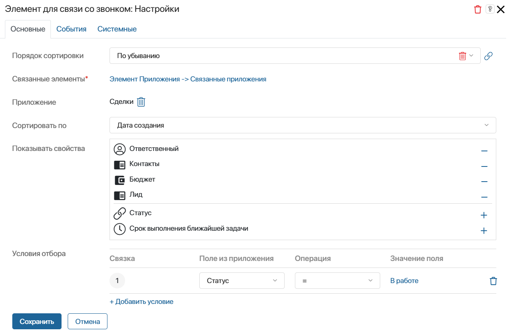

При наличии лицензии на системное решение CRM ELMA365 Управление коммуникациями в карточке входящего или исходящего звонка менеджер может открыть карточку сводной информации. В ней ему доступны контактные данные клиента, а также его лиды и сделки. Выбрав нужный элемент и связав его со звонком, менеджер сохранит историю общения с клиентом в карточке элемента.
Обратите внимание, данные о звонке отображаются в карточках элементов приложений, если на их формах размещён виджет Реестр звонков.
Карточка представляет собой форму с преднастроенными вкладками: О контакте, Активные элементы и Все активности по контакту. Вы можете изменить настройки виджетов в карточке, а также добавить на неё дополнительные данные.

Подробнее о работе с карточкой сводной информации читайте в статье «Работа со звонком».
Настроить внешний вид карточки сводной информации
Начало внимание
Настраивать карточку может только администратор системы.
Конец внимание
Карточка настраивается для входящего и исходящего звонков одинаковым образом. Рассмотрим действия на примере входящего звонка:
- В разделе Администрирование > Настройка звонка перейдите на вкладку Карточка сводной информации по входящему звонку.

- В поле Открывать окно по умолчанию:
- выберите Да, чтобы карточка сводной информации открывалась автоматически при ответе на звонок;
- выберите Нет, чтобы менеджер мог открыть карточку во время и после звонка.
- Для настройки внешнего вида карточки и данных, которые будут отображаться в ней нажмите кнопку Настроить в конструкторе. Откроется дизайнер интерфейсов, где вы можете:
- задать условия для отбора элементов из приложений Лиды и Сделки. Например, показывать в карточке только записи в определённом статусе;
- выбрать свойства приложений Контакты, Лиды и Сделки, которые будут отображаться в карточке;
- добавить виджеты и указать другое приложение, в элементах которого хотите хранить историю звонков с клиентом, например, Компании. Обратите внимание, на форме приложения должен быть размещён виджет Реестр звонков.
Настроить вкладку «О контакте»
На вкладке размещён виджет Данные об элементе приложения обработки звонков. В нём во время звонка отображаются контактные данные клиента.
Чтобы настроить параметры виджета:
- Нажмите на него и затем на значок шестерёнки.
- В открывшемся окне заполните поля:
- Номер телефона* и Выбранный контакт* — поля заполнены автоматически. Здесь указаны свойства приложения Звонки. В них записаны контактные данные клиента, идентифицированные по номеру телефона во время вызова. Изменять значения нельзя;
- Показать кнопку «Редактировать» — включите отображение кнопки. Нажав на неё, менеджер откроет карточку контакта и сможет отредактировать данные в ней;
- Показать кнопку «Выбрать другой» — включите отображение кнопки. Если в связанном приложении, напимер Контакты, есть несколько записей с одинаковым номером телефона, во время звонка может распознаться неверный элемент. Нажав на кнопку, менеджер выберет нужную запись из приложения и свяжет её со звонком;
- Показывать свойства — отметьте свойства связанного приложения, по умолчанию это Контакты, которые будут показаны в карточке. По ним менеджер ознакомится с подробными сведениями о клиенте.
- Сохраните настройки.
Настроить вкладку «Активные элементы»
На вкладке размещены два виджета Элемент для связи со звонком. В настройках одного из них по умолчанию указано приложение Лиды, в другом — Сделки. В каждом виджете во время звонка отображается недавно созданный элемент приложения, по которому ведётся работа с клиентом.
Чтобы настроить параметры виджета:
- Нажмите на него и затем на значок шестерёнки.
- В открывшемся окне заполните поля:

- Порядок сортировки — заполнять поле не требуется;
- Связанные элементы* — поле заполнено автоматически. Здесь указано свойство приложения Звонки, в которое запишется элемент, если менеджер свяжет его со звонком. Изменить значение нельзя;
- Приложение — по умолчанию может быть указано приложение Лиды или Сделки. Его элемент будет показан в карточке для связи со звонком;
- Сортировать по — заполнять поле не требуется;
- Показывать свойства — выберите поля указанного приложения, которые хотите отобразить в карточке;
- Условия отбора — добавьте условие, чтобы только соответствующие ему элементы отображались в карточке. Например, чтобы для связи со звонком предлагалась сделка в статусе В работе.
Обратите внимание, условие должно совпадать с условиями отбора, заданными в виджете Список активных элементов на вкладке Все активности по контакту. Если это не так, в карточке отобразится некорректная информация.
- Сохраните настройки.
Настроить вкладку «Все активности по контакту»
Здесь настроены отдельные вкладки для лидов и сделок. На каждой из них размещён виджет Список активных элементов, в котором отображаются все лиды или сделки, по которым велась работа с клиентом.
Чтобы настроить параметры:
- Перейдите на одну из вкладок, например, Сделки.
- Нажмите на виджет Список активных элементов, а затем на значок шестерёнки.
- В открывшемся окне заполните поля:

- Связанные элементы* — поле заполнено автоматически. Здесь указано свойство приложения Звонки, в которое запишется элемент, если менеджер свяжет его со звонком. Изменить значение нельзя;
- Приложение* — по умолчанию указано приложение Сделки, его элементы будут показаны в карточке;
- Порядок сортировки — выберите, в какой последовательности будут отображаться записи указанного приложения;
- Сортировать по — выберите параметр, по которому сформируется последовательность элементов в списке;
- Показать свойства — отметьте свойства приложения для отображения в карточке;
- Поля для фильтрации — выберите поля, по которым менеджер сможет быстро найти элементы в списке;
- Условие отбора — добавьте условие, чтобы только соответствующие ему элементы отображались в карточке. Например, чтобы для связи со звонком предлагались только сделки в статусе В работе.
Обратите внимание, условие должно совпадать с условиями отбора, заданными в виджете Элемент для связи со звонком на вкладке Активные элементы. Если это не так, в карточке отобразится некорректная информация.
- Сохраните настройки.
После настройки виджетов, размещённых в карточке по умолчанию, вы можете создать на форме дополнительную вкладку и разместить на ней пользовательские виджеты. Затем опубликуйте форму.
Чтобы завершить настройку карточки сводной информации по входящему звонку, на странице Администрирование > Настройка звонка нажмите кнопку Сохранить.
Таким же образом задайте внешний вид карточки сводной информации по исходящему звонку.